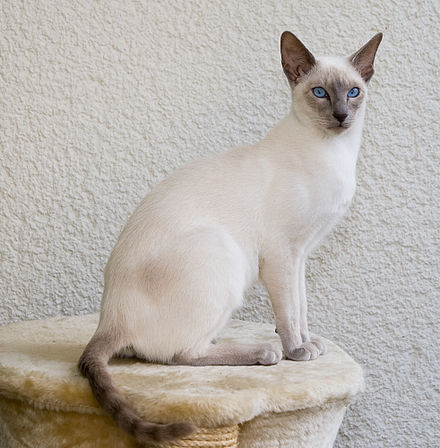

The Siamese cat (Thai: แมวไทย, Maeo Thai; แมวสยาม, Maeo Seeaam) is one of the first distinctly recognized breeds of Asian cat. Derived from the Wichianmat landrace, one of several varieties of cat native to Thailand (formerly known as Siam), the original Siamese became one of the most popular breeds in Europe and North America in the 19th century. The carefully refined, more extreme-featured, modern-style Siamese is characterized by blue almond-shaped eyes; a triangular head shape; large ears; an elongated, slender, and muscular body; and various forms of point colouration. Other than colouration, the modern-style Siamese bears little resemblance to the original stock, and the more moderate, traditional, or "old-style" Siamese, with a much rounder head and body, has been re-established by multiple registries as the Thai cat.
